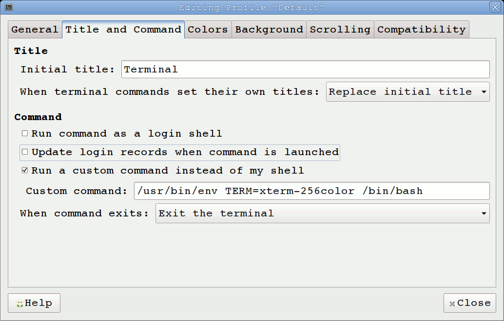

Usando mate-terminal con 256 colores
Actualmente debido al bug 209 en mate terminal (abierto al 25 de Junio de 2018) tengo problemas para utilizar el tema luna del plugin de vim airline.
Como se indica en el bug, se puede utilizar
$ TERM=xterm-256color vim
para corroborar que estableciendo correctamente la variable de entorno TERM el
problema se soluciona.
Ahora, no encontre como determinar que el shell está utilizando mate-terminal
y no deseo setear la variable TERM en ~/.bashrc ya que podría tener
problemas con otros terminales.
Como alternativa se elige ejecutar un comando customizado en lugar del shell. A
la opción se accede haciendo Click derecho > Profiles > Profile Preferences.
Allí se va a la tab Title and Command, se marca la opción Run a custom
command instead of my shell y en Custom command se agrega: /usr/bin/env TERM=xterm-256color /bin/bash.

El comando personalizado utiliza env para ejecutar bash en un
entorno al que se le agrega la variable (valga la redundancia, de entorno)
TERM=xterm-256color.
Para hacer lo anterior desde consola se puede utilizar el programa dconf.
Primero se listan los profiles en uso (en mi caso solo esta el profile por defecto):
$ dconf list /org/mate/terminal/profiles/
default/
Luego asignarle el comando customizado al profile, en este caso el por defecto:
$ dconf write /org/mate/terminal/profiles/default/custom-command \
"'/usr/bin/env TERM=xterm-256color /bin/bash'"
Para corroborar que el cambio fué aplicado correctamente se puede utilizar:
$ dconf read /org/mate/terminal/profiles/default/custom-command
'/usr/bin/env TERM=xterm-256color /bin/bash'